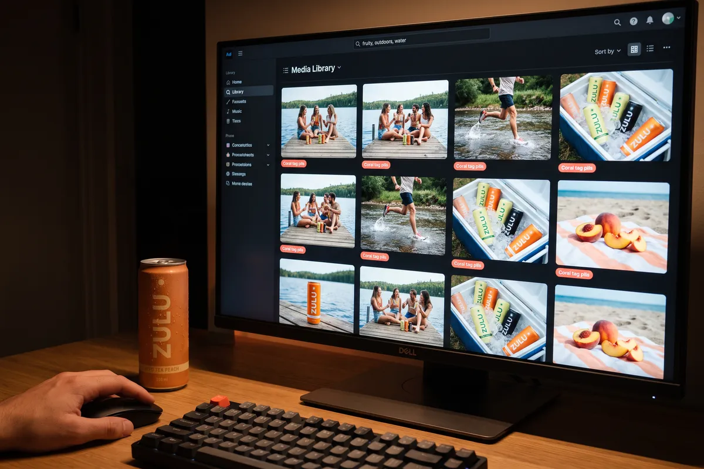

01 Footage-Archiv
Jede Aufnahme, die Sie haben, in Sekunden gefunden.
Jev verschlagwortet jedes Foto und jedes Filmbild: Produkt, Menschen, Ort, Licht, Stimmung. Dann suchen Sie, wie Sie sprechen: „fruchtig, draußen, Wasser“.
So sieht es aus →